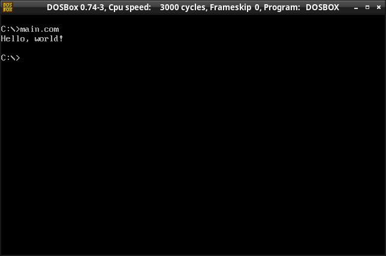

參考資訊：
https://www.japheth.de/JWasm/Samples.html
main.s
.model tiny
.data
msg db "Hello, world!",13,10,'$'
.code
org 100h
start:
mov ah, 09h
mov dx, offset msg
int 21h
mov ax, 4c00h
int 21h
end start
dosbox.conf
[sdl] fullscreen=false output=surface [dosbox] memsize=16 [autoexec] mount c . c: cls main.com
編譯、執行
$ jwasm -bin -Fo main.com main.s $ dosbox -conf dosbox.conf
